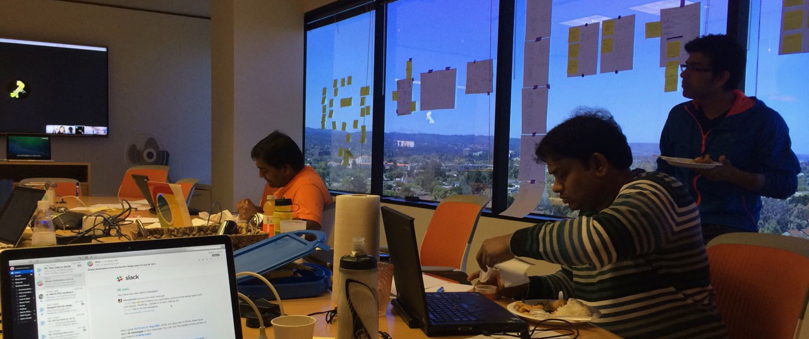
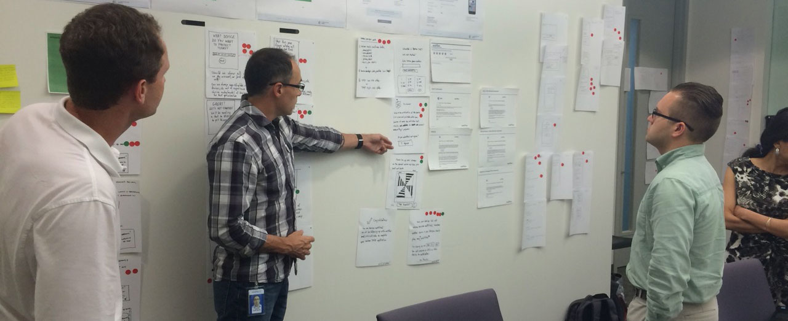
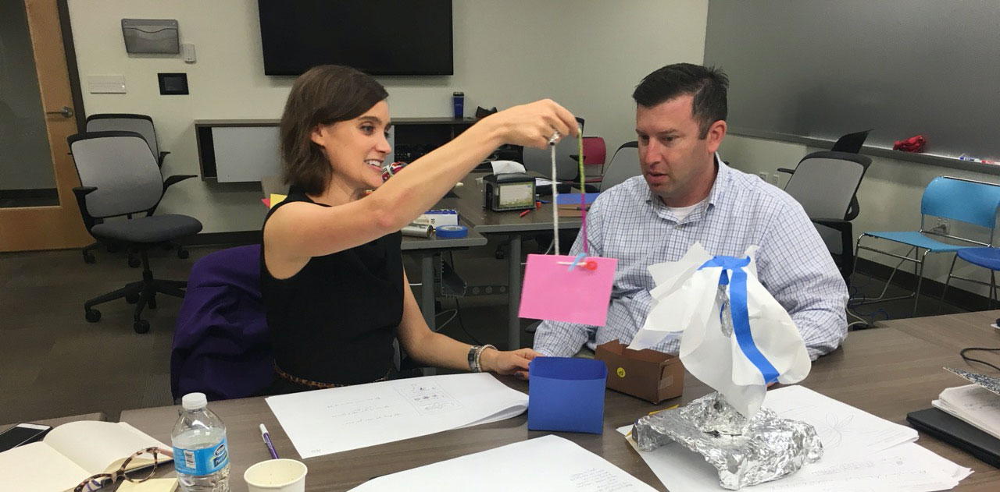
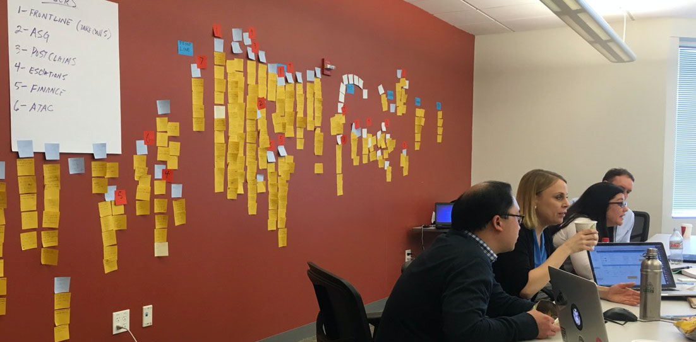

Asurion has been, more or less, a white label insurance service for major mobile carriers such as Verizon, AT&T and Sprint. Keeping the carriers “happy” was an obvious goal, and they had gotten really good at quickly responding to their requests and doing whatever takes to deliver.
Manager
Evangelist
Workshop Facilitation
User Research
Presentation
The Asurion product organization was seen as order takers not partners in strategy and certainly not innovators. End users, needs and innovation in general were a lower priority. Backlogs were just list of features that flip flopped in priority based on who was requesting. Operationally focused KPIs and a heavy focus on NPS made it hard to know what was and was not working for the users. It should be no surprise that there was a general lack of value seen in design.
Asurion is full of good people who really want to do the right thing. Leadership was asking for more “testing” as a means to avoid unforeseen impacts to KPIs and NPS. The product organization subscribed to the fail fast and agile (iterative) development process.
Bringing change to an organization from the bottom up requires vision, persistence and a little luck. We realized that getting individuals bought into the value of design thinking was key if we wanted the process adoption to spread.
I started by really making sure I thoroughly understood the process and methodologies I would be evangelizing. We realized that any value seen by the adoption of design thinking would need to ultimately reveal itself in the current overarching objectives of NPS and making the carriers happy.
Next we found a product group who was both looking to innovate and open to letting us help. This required us to look beyond the organizational boundaries and take on more responsibility. Just doing what we had been doing for those we had been working with was not going to work.

The group was in a separate org that focuses on white labeled apps for the carriers. They agreed to give us a week of their valuable time for the promise of innovative ideas for their platform.
I put together an agenda based on blog articles from the Google Ventures Design Group. Together with the product manager we got the right people in the room and followed the process for a 5 day design sprint. We not only came up with a great prototype that looked promising and actual end user feedback but everyone loved the experience.
After that first sprint, word spread about what we accomplished. The participants felt they were able to add value beyond the scope of their day to day responsibilities. They were bought in to the process and excited to talk about it.
That first year I facilitated 3 design sprints

The next year I helped train more facilitators and we ran two more sprints. I designed an internal website to help the team learn design thinking and understand which methods can be used in the process. I teamed up with another designer to create a deck of cards to hand out. I also ran several training workshops (dp0) throughout the company


The third year was the turning point. Product managers started coming to us asking for design sprints. We facilitated 6 that year and 11 the next.
We now have 7 people who are experienced facilitating a design sprint and are running a sprint somewhere in the company at least twice a month. I personally have facilitated over 20 design sprints. We have used design thinking to ideate around everything from simple features to complex organizational challenges.
My efforts in promoting design thinking and facilitating design sprints has contributed to a rise in a perceived value of design at Asurion. The design group has grown from 15 to almost 50 designers and is seen as a valuable partner in product strategy. Design has also became know as ambassadors for the end user. We as a company have started to shift the relationship with the carriers to one of a strategic partner and have facilitated several join design sprints and ideation efforts.